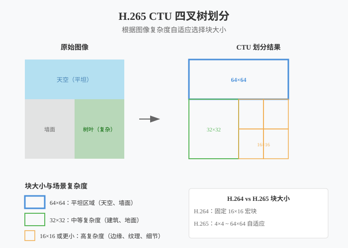
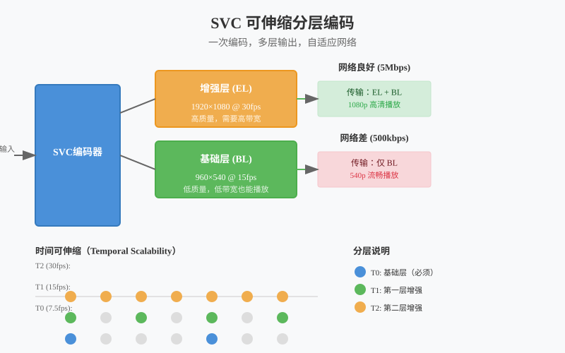

音视频开发实战
第13章：视频编码进阶
| 项目 | 内容 |
|---|---|
| 本章目标 | 掌握视频编码进阶的核心概念和实践 |
| 难度 | ⭐⭐⭐⭐ 高 |
| 前置知识 | Ch12：H.264编码、码率控制 |
| 预计时间 | 4-5 小时 |
本章引言
本章目标：掌握 H.265/AV1 编码、SVC 可伸缩编码，理解码率控制的高级策略。
在第十二章中，我们使用 x264 实现了 H.264 编码和 RTMP 推流。H.264 凭借出色的兼容性至今仍是直播领域的主流选择，但随着 4K、8K 超高清视频的普及，H.264 的压缩效率已显不足。本章将深入探讨新一代视频编码技术，帮助你在不同场景下做出最优的技术选型。
你将学到： - H.265/HEVC：如何在相同画质下将码率降低 50% - AV1：开源免版税的编码新选择，压缩效率再提升 20% - SVC：让直播自动适应观众网络状况的分层编码技术 - 码率控制：CBR、VBR、CRF 的原理与选型策略
本章与第十二章的关系： - Ch12 是 H.264 编码的入门与实践 - Ch13 是进阶与选型，学习何时应该超越 H.264
目录
- 视频编码的瓶颈：为什么 H.264 不够了
- 编码标准演进路线图
- 压缩效率的数学：BD-Rate 指标详解
- H.265/HEVC 核心原理
- AV1：开源时代的编码选择
- SVC 可伸缩分层编码
- 码率控制策略深度解析
- 编码器选型决策框架
- 本章总结
1. 视频编码的瓶颈：为什么 H.264 不够了
1.1 带宽成本的现实压力
让我们先看一组实际数据：
| 场景 | H.264 码率 | 1小时流量 | CDN 成本（0.1元/GB） |
|---|---|---|---|
| 1080p 直播 | 4 Mbps | 1.8 GB | 0.18 元/人 |
| 4K 直播 | 25 Mbps | 11.25 GB | 1.125 元/人 |
| 4K 直播（1万人观看） | - | - | 11,250 元/小时 |
对于大型直播平台，带宽成本是仅次于人力成本的第二大支出。如果能把码率降低 50%，意味着每年可节省数百万的 CDN 费用。
1.2 H.264 的技术局限
设计年代的限制： H.264 标准定型于 2003 年，当时的主流分辨率还是 480p（标清）。标准设计时考虑了以下假设： - 最大分辨率：2048×2048（当时认为足够） - 最大块大小：16×16（宏块） - 参考帧数：最多 16 帧
这些参数在 1080p 时代还能应付，但面对 4K（3840×2160）时就显得捉襟见肘： - 4K 画面有 830 万像素，需要约 52,000 个 16×16 宏块 - 宏块数量过多导致编码决策开销剧增 - 固定块大小无法适应 4K 画面的复杂度分布
专利费用的隐形成本： H.264 采用专利池授权模式（MPEG LA）： - 编码器/解码器厂商需缴纳专利费 - 流媒体服务商如果收费，超过一定规模也需缴费 - 虽然个人用户和小型项目通常免费，但商业应用存在不确定性
2. 编码标准演进路线图
2.1 三代编码标准对比
flowchart LR
subgraph "编码标准演进"
H264["H.264/AVC<br/>2003年<br/>基准"] -->|"+40%效率"| H265["H.265/HEVC<br/>2013年<br/>省50%码率"]
H265 -->|"+50%效率"| AV1["AV1<br/>2018年<br/>免版税"]
end
subgraph "压缩效率"
direction TB
E1["H.264: 基准"]
E2["H.265: +40%"]
E3["AV1: +50%"]
end
subgraph "专利费用"
P1["H.264: 有专利费"]
P2["H.265: 有专利费"]
P3["AV1: 免版税 ✅"]
end
H264 -.-> E1
H265 -.-> E2
AV1 -.-> E3
H264 -.-> P1
H265 -.-> P2
AV1 -.-> P3
style H264 fill:#4a90d9,stroke:#357abd,color:#fff
style H265 fill:#5cb85c,stroke:#4cae4c,color:#fff
style AV1 fill:#f0ad4e,stroke:#ec971f,color:#fff
style P3 fill:#5cb85c,stroke:#4cae4c,color:#fff
H.264/AVC（2003）—— 基准时代 - 首次实现数字视频的高效压缩 - 采用宏块划分、运动补偿、变换编码三大技术 - 兼容性无敌，至今仍是设备支持最广泛的格式
H.265/HEVC（2013）—— 效率时代 - 目标：相同画质下码率减半 - 核心创新：CTU（编码树单元）四叉树划分 - 代价：计算复杂度大幅提升（编码时间增加 3-5 倍） - 遗憾：仍受专利费困扰
AV1（2018）—— 开源时代 - 由 AOMedia 联盟（Google、Apple、Netflix、Amazon 等）开发 - 目标：免版税 + 最高压缩效率 - 核心创新：更灵活的块划分、更精细的预测模式 - 挑战：软件编码极慢，依赖硬件支持
2.2 编码标准选型的决策维度
选择编码标准时需要考虑：
| 维度 | H.264 | H.265 | AV1 |
|---|---|---|---|
| 压缩效率 | 基准 | +40-50% | +50-60% |
| 编码速度 | 快 | 慢（30%） | 极慢（15%） |
| 硬件支持 | universal | 较新设备 | 最新设备 |
| 浏览器支持 | 100% | Safari 支持 | Chrome/Firefox |
| 专利风险 | 有 | 有 | 无 |
| 适用场景 | 通用直播 | 4K/存储 | Web/VOD |
3. 压缩效率的数学：BD-Rate 指标详解
3.1 如何量化”压缩效率”
RD 曲线（Rate-Distortion Curve）： RD 曲线描述了码率（Rate）与失真（Distortion）之间的权衡关系： - X 轴：码率（kbps） - Y 轴：质量损失（通常用 PSNR 或 VMAF 表示）
同一视频用不同编码器、不同参数编码，会得到一组 RD 点，连接成曲线。
BD-Rate 计算原理： BD-Rate（Bjøntegaard Delta Rate）计算两条 RD 曲线之间的平均码率差异： 1. 在两个质量点上计算码率差值 2. 对数坐标下求面积积分 3. 结果表示”相同质量下节省的码率百分比”
BD-Rate = (Area under curve B - Area under curve A) / Area under curve A × 100%3.2 实际 BD-Rate 对比数据
根据 Netflix、Google 等公司的实测数据（1080p 视频）：
| 编码器 | 相对 H.264 的 BD-Rate | 实际意义 |
|---|---|---|
| x264 (H.264) | 0% | 基准 |
| x265 (H.265) | -45% | 节省近一半码率 |
| libvpx-vp9 | -50% | Google 主推格式 |
| SVT-AV1 | -55% | 最高压缩效率 |
实例说明： 一部 2 小时的 1080p 电影： - H.264 @ 8 Mbps = 7.2 GB - H.265 @ 4.5 Mbps = 4.05 GB（节省 3.15 GB） - AV1 @ 3.6 Mbps = 3.24 GB（节省 4 GB）
3.3 质量评估指标的选择
PSNR（峰值信噪比）： - 基于像素差异计算 - 优点：计算简单、客观 - 缺点：不符合人眼感知（相同 PSNR 可能看起来差异很大）
VMAF（视频多方法评估融合）： - Netflix 开发，机器学习模型 - 结合多种特征预测人眼感知质量 - 目前业界最权威的客观质量指标
SSIM（结构相似性）： - 衡量结构信息保留程度 - 比 PSNR 更符合人眼感知 - 计算复杂度适中
4. H.265/HEVC 核心原理
4.1 CTU 四叉树划分：自适应块大小

从宏块到 CTU： H.264 使用固定的 16×16 宏块，而 H.265 引入编码树单元（Coding Tree Unit, CTU）： - 最大 CTU 尺寸：64×64（可配置） - 支持四叉树递归划分：64→32→16→8→4 - 每个 CTU 可根据画面复杂度选择最优块大小
为什么自适应划分能节省码率？
想象用不同大小的瓷砖铺地： - 客厅地面（平坦）：用大瓷砖（64×64），减少缝隙数量 - 马赛克图案墙（复杂）：用小瓷砖（4×4），精确还原细节
同理： - 天空、墙面（颜色均匀）：64×64 大块，表示”这块都差不多” - 树叶、毛发（细节丰富）：4×4 小块，精确编码每个像素
数学原理： 设编码决策的拉格朗日代价为：
J = D + λR- D：失真（质量损失）
- R：码率（数据量）
- λ：拉格朗日乘子（质量-码率权衡系数）
对于平坦区域，大块划分使 R 显著减小，而 D 增加很小，J 更小。 对于细节区域，小块划分使 D 显著减小，虽然 R 增加，但 J 更小。
4.2 更多预测方向
帧内预测：利用空间相关性，用已编码的相邻像素预测当前块。
| 编码标准 | 预测模式数 | 新增特性 |
|---|---|---|
| H.264 | 9 | 8方向 + DC |
| H.265 | 35 | 33方向 + DC + Planar |
| AV1 | 56 | 更精细角度 + 递归滤波 |
预测方向图解：
0°（水平）
↑
315° ← ● → 45°
↓
90°（垂直）更多方向意味着可以更精确地匹配图像边缘的走向。例如 22.5° 的边缘，H.264 只能用 0° 或 45° 近似，而 H.265 可以更精确地表示。
4.3 环路滤波改进
去块滤波（Deblocking Filter）： H.264 和 H.265 都有，用于消除块效应（Block Artifacts）。
SAO（Sample Adaptive Offset，样本自适应偏移）： H.265 新增，解决振铃效应（Ringing Artifacts）： - 根据边缘方向对重建像素进行偏移修正 - 分为 EO（Edge Offset）和 BO（Band Offset）两种模式
通俗解释： 编码后的图像在某些边缘会有”振铃”（像水波纹一样的伪影），SAO 像是一个”修图工具”，检测这些伪影并进行微调修正。
5. AV1：开源时代的编码选择
5.1 为什么需要 AV1
H.265 的专利困境： H.265 有三个专利池： 1. MPEG LA（主要专利池） 2. HEVC Advance（后改名 Access Advance） 3. Velos Media（独立专利池）
这种”多专利池”模式带来不确定性： - 厂商不知道该向谁缴费 - 专利费总和可能过高 - 某些专利持有者可能突然跳出来收费
AOMedia 的诞生： 2015 年，Google、Netflix、Amazon、Microsoft、Intel 等巨头联合成立 Alliance for Open Media（开放媒体联盟），目标是开发完全免版税的视频编码标准。
AV1 的设计目标： 1. 压缩效率比 H.265 再提升 30% 2. 完全免版税，无专利风险 3. 针对互联网流媒体优化（如支持 Tile 并行编码）
5.2 AV1 的核心技术
扩展块大小： - 最大块：128×128（H.265 是 64×64） - 支持多种划分方式：四叉树 + 二叉树 + 三叉树
更精细的帧内预测： - 56 种方向模式 - 新增”递归滤波帧内预测”（Recursive Filtering Intra Prediction） - 新增”色度 from 亮度”预测（CfL）
CDEF 和 Loop Restoration： 替代 H.265 的 SAO，提供更好的环路滤波效果。
5.3 AV1 编码现状与选型建议
软件编码（SVT-AV1）： - 质量极高，但速度极慢（约 x264 的 1/6） - 适合：VOD 转码、存档、慢直播 - 不适合：实时直播
硬件编码器支持情况（截至 2024）： | 平台 | 支持情况 | 性能 | |:—|:—|:—| | NVIDIA RTX 40 系列 | NVENC AV1 | 4K@60fps | | Intel Arc GPU | QSV AV1 | 4K@60fps | | Apple M3/M4 | VideoToolbox AV1 | 4K@60fps | | 手机芯片 | 骁龙 8 Gen 2+ | 1080p@60fps |
AV1 选型建议： - 有 RTX 40 显卡做直播 → NVENC AV1 是最佳选择 - VOD 转码 → SVT-AV1 可获得最高压缩率 - Web 播放场景 → AV1 兼容性已足够（Chrome/Firefox/Safari）
6. SVC 可伸缩分层编码
6.1 为什么需要 SVC
传统方案的痛点： 一场直播有 1 万观众，网络状况各不相同： - 5% 用 5G（可以 1080p） - 30% 用 WiFi（可以 720p） - 50% 用 4G（只能 540p） - 15% 网络差（只能 360p）
传统方案需要服务器为每种分辨率单独转码，资源消耗巨大。
SVC 的解决方案： 编码器一次编码产生多层视频，观众根据网络状况选择接收哪几层： - 网络好：基础层 + 增强层 → 高清 - 网络差：只收基础层 → 流畅但质量低
6.2 SVC 的三维可伸缩性

时间可伸缩（Temporal Scalability）：
时间层 T2（30fps）：● ● ● ● ● ● ● （所有帧）
时间层 T1（15fps）：● ● ● ● （每2帧取1帧）
时间层 T0（7.5fps）：● ● （每4帧取1帧）网络差时，接收端可以丢弃高时间层，降低帧率但保持画面流畅。
空间可伸缩（Spatial Scalability）：
增强层：1920×1080（全高清）
基础层： 960×540（四分之一分辨率）基础层独立可解码，增强层提供细节补充。
质量可伸缩（Quality Scalability）：
增强层：低 QP（高质量，高码率）
基础层：高 QP（低质量，低码率）同一分辨率，不同压缩比。
6.3 SVC 与 Simulcast 的对比
| 特性 | SVC | Simulcast |
|---|---|---|
| 编码次数 | 1 次 | N 次（每层1次） |
| 服务器资源 | 低（无需转码） | 高（需要转码或选择） |
| 客户端选择 | 丢包/选择性接收 | 选择不同流 |
| 延迟 | 低 | 较高 |
| 兼容性 | 较差（需播放器支持） | 好（标准流） |
WebRTC 的选择： WebRTC 早期使用 Simulcast，现在主流实现都支持 SVC（VP9 和 AV1）。
7. 码率控制策略深度解析
7.1 码率控制的目标与约束
码率控制的本质： 在给定的带宽约束下，分配比特以最小化整体失真。
约束条件： 1. 带宽约束：不能超过网络容量 2. 缓冲约束：防止缓冲区溢出或下溢 3. 延迟约束：直播场景要求低延迟
7.2 CBR、VBR、CRF 深度对比
flowchart TB
subgraph "CBR 恒定码率"
C1["码率稳定: ████████████████████"]
C2["特点:"]
C3["✓ 网络带宽稳定"]
C4["✓ 延迟可控"]
C5["✓ CDN 成本可控"]
C6["推荐: 直播场景"]
C2 --- C3
C2 --- C4
C2 --- C5
end
subgraph "VBR 可变码率"
V1["码率波动: ████████████████████"]
V2["特点:"]
V3["✓ 质量最优"]
V4["✓ 文件体积小"]
V5["✗ 带宽需求波动大"]
V6["适合: 点播/VOD"]
V2 --- V3
V2 --- V4
V2 --- V5
end
subgraph "CRF 恒定质量"
R1["质量恒定，码率波动大"]
R2["特点:"]
R3["✓ 质量可控"]
R4["✓ 无需设置码率"]
R5["✗ 码率不可预测"]
R6["适合: 存档/转码"]
R2 --- R3
R2 --- R4
R2 --- R5
end
style C1 fill:#4a90d9,color:#fff
style V1 fill:#5cb85c,color:#fff
style R1 fill:#f0ad4e,color:#fff
style C6 fill:#28a745,color:#fff
style V6 fill:#6c757d,color:#fff
style R6 fill:#6c757d,color:#fff
CBR（Constant Bitrate）恒定码率：
原理：每秒钟输出的数据量恒定
实现：通过填充（stuffing）或量化调整保持码率稳定
优点：带宽可预测，适合直播
缺点：复杂场景质量下降（码率不够），简单场景浪费带宽VBR（Variable Bitrate）可变码率：
原理：根据画面复杂度动态分配码率
实现：简单场景少给比特，复杂场景多给比特
优点：整体质量最优，文件大小最小
缺点：码率波动大，不适合直播（可能超出带宽）CRF（Constant Rate Factor）恒定质量因子：
原理：保持"质量水平"恒定，不管码率多少
实现：x264/x265 的参数 0-51，越小质量越高
优点：无需指定码率，一次编码即可
缺点：码率不可预测，不适合带宽受限场景7.3 VBV 缓冲区模型
为什么需要 VBV： CBR 并非真正的”每一秒都严格恒定”，而是有一个缓冲区来平滑瞬时码率波动。
VBV（Video Buffering Verifier）模型： - Buffer Size：缓冲区大小（如 1 秒的数据量） - Initial Delay：初始填充时间 - Max Rate：最大输入码率
VBV 参数设置：
ffmpeg -i input.mp4 -c:v libx264 \
-b:v 4000k \ # 目标码率
-maxrate 4000k \ # 最大码率
-bufsize 400k \ # VBV 缓冲区（100ms）
output.mp4缓冲区大小的影响： - 缓冲区大：码率更平滑，质量更稳定，延迟增加 - 缓冲区小：码率波动大，适合低延迟直播
7.4 自适应码率（ABR）算法
基本思路： 根据网络反馈（RTT、丢包率）动态调整目标码率。
简单 ABR 实现：
class AdaptiveBitrateController {
public:
void OnNetworkReport(int rtt_ms, float loss_rate, int jitter_ms) {
// 丢包率过高：严重拥塞，大幅降码率
if (loss_rate > 0.05f) {
target_bitrate_ *= 0.7f;
state_ = NetworkState::Congested;
}
// 轻微丢包：轻度拥塞，小幅降码率
else if (loss_rate > 0.02f) {
target_bitrate_ *= 0.85f;
state_ = NetworkState::Warning;
}
// RTT 和抖动都很小：网络良好，尝试升码率
else if (rtt_ms < 100 && jitter_ms < 50 &&
state_ == NetworkState::Good) {
target_bitrate_ *= 1.1f;
}
// 限制在合理范围
target_bitrate_ = std::clamp(target_bitrate_,
min_bitrate_, max_bitrate_);
}
private:
int target_bitrate_ = 4000000; // 4 Mbps
int min_bitrate_ = 500000; // 500 kbps
int max_bitrate_ = 8000000; // 8 Mbps
NetworkState state_ = NetworkState::Good;
};GCC（Google Congestion Control）： WebRTC 使用的拥塞控制算法，同时基于延迟和丢包进行决策，是目前最先进的实时码率控制方案之一。
8. 编码器选型决策框架
8.1 决策流程图
flowchart TD
Start["编码器选型"] --> Q1{"需要浏览器播放？"}
Q1 -->|是| H264["H.264 x264<br/>兼容性最好"]
Q1 -->|否| Q2{"需要最低码率？"}
Q2 -->|是| Q3{"有 RTX 40 显卡？"}
Q2 -->|否| Q4{"有硬件编码？"}
Q3 -->|是| AV1["NVENC AV1<br/>硬件加速，最高效率"]
Q3 -->|否| SVT["x265 / SVT-AV1<br/>软件编码，慢但质量高"]
Q4 -->|是| H265["NVENC/QSV H.265<br/>硬件 H.265，平衡选择"]
Q4 -->|否| X264["x264<br/>平衡之选"]
style Start fill:#f5f5f5,stroke:#666
style Q1 fill:#4a90d9,color:#fff
style Q2 fill:#fff,stroke:#666
style Q3 fill:#fff,stroke:#666
style Q4 fill:#fff,stroke:#666
style H264 fill:#5cb85c,color:#fff
style AV1 fill:#f0ad4e,color:#fff
style SVT fill:#f0ad4e,color:#fff
style H265 fill:#5cb85c,color:#fff
style X264 fill:#5cb85c,color:#fff
8.2 场景化选型指南
场景 1：普通直播（推荐 H.264） - 用户群体多样，设备未知 - 需要确保所有人都能观看 - 推荐：x264，preset medium，CBR
场景 2：4K 直播（推荐 NVENC AV1/H.265） - 观众设备较新，带宽充足 - 追求最佳画质 - 有 RTX 40 → NVENC AV1 - 无 RTX 40 → NVENC H.265
场景 3：游戏直播（推荐 NVENC H.264） - 需要最小 CPU 占用（留给游戏） - 快速运动场景需要高帧率 - 推荐：NVENC H.264，high profile
场景 4：视频会议（推荐 H.264 + SVC） - 参与者网络状况差异大 - 需要低延迟 - 推荐：OpenH264 或硬件编码 + SVC
场景 5：视频存档（推荐 SVT-AV1） - 时间充裕，追求最高压缩率 - 播放设备较新 - 推荐：SVT-AV1，preset 4-6
8.3 性能与质量的权衡
没有最好的编码器，只有最适合场景的编码器。
| 你的优先级 | 推荐选择 |
|---|---|
| 兼容性第一 | H.264（x264/硬件） |
| 压缩率第一 | AV1（SVT-AV1/NVENC） |
| 速度第一 | H.264（NVENC） |
| 质量第一 | H.265（x265 slow） |
| 免版税 | AV1（SVT-AV1） |
9. 本章总结
9.1 核心概念回顾
| 概念 | 关键点 |
|---|---|
| H.265/HEVC | CTU 四叉树划分，比 H.264 省 40-50% 码率，但有专利费 |
| AV1 | 免版税，压缩率最高，浏览器原生支持，软件编码慢 |
| SVC | 一次编码多层输出，自适应网络，适合多观众场景 |
| CTU | 编码树单元，64×64 到 4×4 自适应划分 |
| CBR/VBR/CRF | CBR 适合直播，VBR 适合存储，CRF 适合转码 |
| BD-Rate | 衡量压缩效率的标准指标，负值表示节省码率 |
9.2 技术选型速查表
| 场景 | 编码器 | 参数建议 |
|---|---|---|
| 通用直播 | x264 | -preset fast -tune zerolatency -b:v 4M |
| 4K 直播（RTX 40） | av1_nvenc | -preset p4 -cq 23 |
| 4K 直播（旧显卡） | hevc_nvenc | -preset p4 -cq 23 |
| 游戏直播 | h264_nvenc | -preset llhq -rc cbr |
| VOD 存档 | libsvtav1 | -preset 4 -crf 32 |
9.3 本章与下章的衔接
本章聚焦于编码器的选择与配置，解决了”如何高效压缩视频”的问题。
下一章（第十四章）将探讨采集端的进阶技术： - 屏幕采集的原理与优化 - 多摄像头管理与画中画 - GPU 纹理共享零拷贝技术
这两章共同构成主播端 Pipeline的核心：采集（Ch14）→ 处理（Ch15）→ 编码（Ch13/Ch12）→ 推流（Ch12）。
延伸阅读： - H.265 标准文档：ITU-T Rec. H.265 - AV1 规范：AOMedia Codec Working Group - VMAF 论文：“Toward A Practical Perceptual Video Quality Metric” —
FAQ 常见问题
Q1：本章的核心难点是什么？
A：视频编码进阶涉及的核心难点包括： - 理解新概念的内在原理 - 将理论知识转化为实际代码 - 处理边界情况和错误恢复
建议多动手实践，遇到问题及时查阅官方文档。
Q2：学习本章需要哪些前置知识？
A：请参考章节头部的前置知识表格。如果某些基础不牢固，建议先复习相关章节。
Q3：如何验证本章的学习效果？
A：建议完成以下检查： - [ ] 理解所有核心概念 - [ ] 能独立编写本章的示例代码 - [ ] 能解释代码的工作原理 - [ ] 能排查常见问题
Q4：本章代码在实际项目中的应用场景？
A：本章代码是渐进式案例「小直播」的组成部分，所有代码都可以在实际项目中使用。具体应用场景请参考「本章与项目的关系」部分。
Q5：遇到问题时如何调试？
A：调试建议： 1. 先阅读 FAQ 和本章的「常见问题」部分 2. 检查前置知识是否掌握 3. 使用日志和调试工具定位问题 4. 参考示例代码进行对比 5. 在 GitHub Issues 中搜索类似问题 —
本章小结
核心知识点
通过本章学习，你应该掌握： 1. 视频编码进阶的核心概念和原理 2. 相关的 API 和工具使用 3. 实际项目中的应用方法 4. 常见问题的解决方案
关键技能
| 技能 | 掌握程度 | 实践建议 |
|---|---|---|
| 理解核心概念 | ⭐⭐⭐ 必须掌握 | 能向他人解释原理 |
| 编写示例代码 | ⭐⭐⭐ 必须掌握 | 独立编写本章代码 |
| 排查常见问题 | ⭐⭐⭐ 必须掌握 | 遇到问题时能自行解决 |
| 应用到项目 | ⭐⭐ 建议掌握 | 将本章代码集成到项目中 |
本章产出
- 完成本章所有示例代码
- 理解 视频编码进阶的工作原理
为后续章节打下基础
下章预告
Ch14：高级采集技术
为什么要学下一章？
每章都是渐进式案例「小直播」的有机组成部分，下一章将在本章基础上进一步扩展功能。
学习建议： - 确保本章内容已经掌握 - 提前浏览下一章的目录 - 准备好相关的开发环境